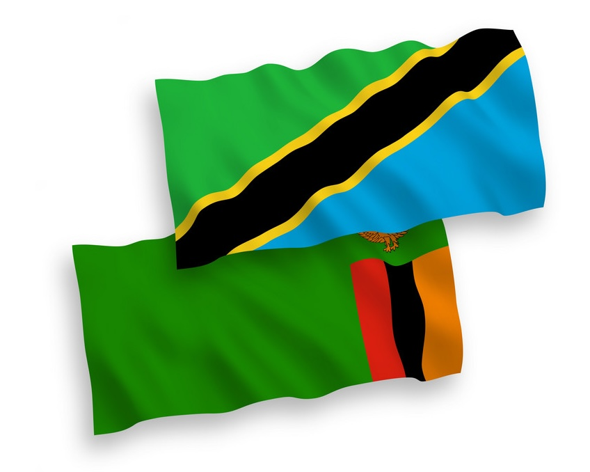

Play Grammar Quiz Game!
Bootstrap Page
Nyanja vs. Swahili Verb Structure

Karibu sana! Welcome to my page to help you identify differences in verb structure between English, Chinyanja (Nyanja), and Kiswahili (Swahili)
I researched and created the following verb structure comparisons because I am currently learnin Nyanja and wanted to push myself. I already
My primary source for the Nyanja verb examples was the book “Town Nyanja” by Phallen Bwalya, Andrew Gray, Brighton Lubasi.
I hope this is helpful! I have enjoyed seeing the similarities between verbs in Nyanja and Swahili so I hope that if you speak one of those two
If you want a walk through of these principles, check out the YouTube video that I have embedded on this page from my podcast.
Also, check out the mini-game I created to quiz yourself on these principles and vocab words!
VIDEO
Verb Conjugation Principles
The Infinitive
Subject prefixes
Object infixes
Present tense
Future tense
Past tense
Past participle tense
Habitual Tense
To be able to
Possibilities or conditions
Continuous past tense
Reflexive verbs
Reciprocal verbs
Passive verbs
Polite imperative
The infinitive
To learn - kupunzila - kujifunza
Subject prefixes
To want - kufuna - kutaka
I want - Nifuna - Ninataka
You want - Ufuna - Unataka
He wants - Afuna - Anataka
It wants - Ifuna - Inataka
We want - Tifuna - Tunataka
You (plural) want - Mufuna - Mnataka
They want - Bafuna - Wanataka
Object infixes
They want me - Banifuna - Wananitaka
They want you - Bakufuna - Wanakutaka
They want him/her - Bamufuna - Wanamtaka
They want it - Baifuna - Wanaitaka
They want us - Batifuna - Wanatutaka
They want you (plural) - Bakufunani - Wanawataka
They want them - Babafuna - Wanawataka
Present tense
To help - Kutandiza - kusaidia
I am helping - nitandiza - ninasaidia
I am not helping - sinitandiza - sisaidii
Future tense
To know - kuziba - kujua
I will know - nizaziba - nitajua
I will not know - sinizaziba - sitajua
Past tense
To do - kuchita - kufanya
I did - ninachita - nilifanya
I did not - sininachite - sikufanya
Past participle tense
*Note: In Nyanja, there is an -a- added after the subject
nia- becomes na-
ua- becomes wa-
aa- becomes a-
ia- becomes ya-
tia- becomes ta-
mua- becomes mwa-
baa- becomes ba-
Now for the actual examples:
To come - kubwela - kuja
I have come - nabwela - nimekuja
You have come - wabwela - umekuja
He has come - abwela - amekuja
It has come - yabwela - imekuja
We have come - tabwela - tumekuja
You (plural) have come - mwabwela - mmekuja
They have come - babwela - wamekuja
Habitual Tense
To read - kubelenga - kusoma
I read - Nimabelenga - Mimi husoma / nasomaga
To be able to
To go - kuyenda - kuenda
To be able to - -nga- - kuweza
I can go - Ningayende - Ninaweza kuenda
Possibilities or conditions
To say - kukamba - kusema
If/when you say - ukakamba - ukisema
Continuous past tense
*Note: Nyanja uses -enze before the verb to signify this.
nienze becomes nenze
uenze becomes wenze
aenze becomes enze
ienze becomes yenze
tienze becomes tenze
muenze becomes mwenze
baenze becomes benze
To run - kutamanga - kukimbia
I was running - nenze kutamanga - nilikuwa nikikimbia
You were running - wenze kutamanga - ulikuwa ukikimbia
He/she was running - enze kutamanga - alikuwa akikimbia
It was running - yenze kutamanga - ilikuwa ikikimbia
We were running - tenze kutamanga - tulikuwa tukikimbia
You (plural) were running - mwenze kutamanga - mlikuwa mkikimbia
They were running - benze kutamanga - walikuwa wakikimbia
Reflexive verbs
To hit - kumenya - kupiga
I hit myself - nizimenya - ninajipiga
Reciprocal verbs
To teach - kupunzisa - kufundisha
We are teaching each other - tipunzisana - tunafundishana
Passive verbs
This is just one example, there are exceptions to this, especially in Swahili
To call - kuitana - kuita
He is being called - aitaniwa - anaitwa
Polite imperative
Notice, in Swahili the tense is removed
To make - kupanga - kutengeneza
Would you make - upange - utengeneze
Back to Top